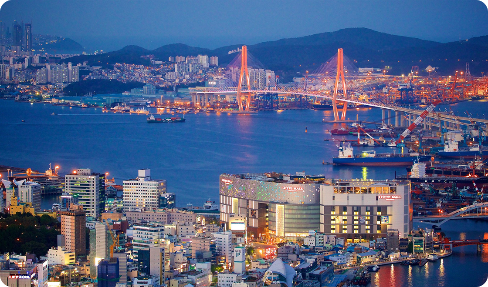
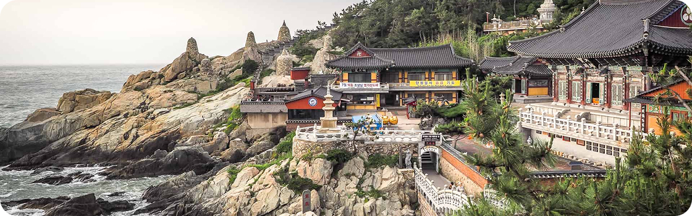
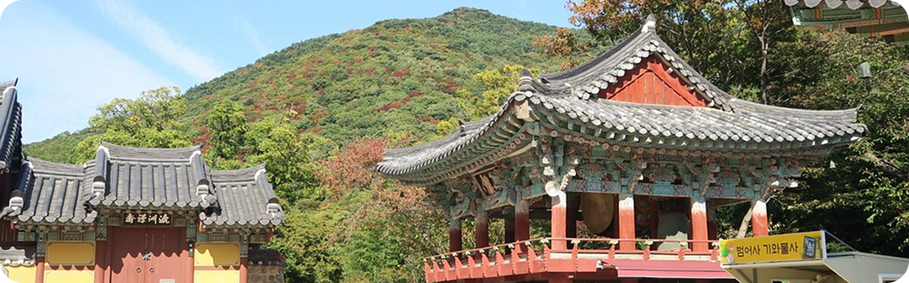
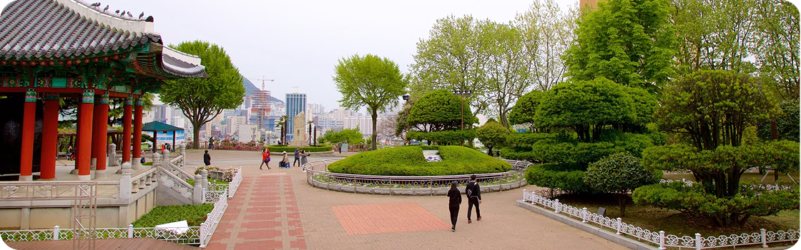

Sua próxima viagem:
Conheça Busan

Busan, a estrela em ascensão da Coreia do Sul, oferece de tudo, desde churrascarias de primeira linha até tradicionais barracas de comida de rua. Aqui, exploramos a segunda cidade da Coreia do Sul e descobrimos as suas ofertas culinárias.
Para os amantes de história
Descubra 3 destinos imperdíveis em Busan
As atrações de Busan vão desde templos budistas centenários que pontilham as montanhas e o litoral da cidade até praias imaculadas com águas cristalinas. Esta cidade litorânea tem muitas coisas para fazer o ano todo - as famílias podem passar o tempo em um aquário à beira-mar, os compradores podem explorar bairros vibrantes e os amantes da natureza podem desfrutar de longas caminhadas até mirantes panorâmicos. Os santuários budistas que pontilham a costa e as montanhas de Busan têm uma arquitetura impressionante que irá encantar os fotógrafos.

1. Templo Haedong Yonggungsa
O Templo Haedong Yonggungsa é um templo budista localizado no extremo nordeste de Busan. Construído em 1376, é um dos poucos templos na Coreia construídos à beira-mar você pode desfrutar de vistas do Mar do Leste de um lado e de belas montanhas do outro.
- História
Bom para:
Visitar, especialmente devido à sua localização única à beira-mar, oferecendo vistas espetaculares do Oceano Pacífico. Fundado em 1376, o templo é um dos poucos na Coreia do Sul que não está localizado nas montanhas, mas sim em uma falésia rochosa, o que o torna especial e impressionante. Os visitantes podem apreciar a arquitetura tradicional coreana e a atmosfera tranquila, além de explorar os jardins decorados com estátuas de animais e a estátua dourada do Buda. A entrada é gratuita e o templo é um local ideal para quem busca uma experiência espiritual e visualmente atraente.

2. Templo Beomeo-sa
O Templo Beomeo-sa é um dos maiores santuários da Coreia do Sul. Ele está localizado no alto da borda leste da montanha Geumjeongsa e fica distante da agitação da cidade. O Daeungjeon Hall do templo é um exemplo bem preservado da arquitetura da Dinastia Joseon.
- História
Bom para:
Ele é conhecido por sua atmosfera tranquila, cercado por florestas e montanhas, e é um centro religioso ativo que alberga mais de 200 monges. O templo oferece uma experiência única, permitindo que os visitantes se conectem com a cultura local e a espiritualidade budista, além de oferecer excelentes opções de caminhadas e vistas deslumbrantes.

3. Parque Yongdusan
O Parque Yongdusan, localizado no centro de Busan, abriga alguns dos monumentos mais importantes da cidade. Você pode ver vistas espetaculares do topo da Torre Busan, de 120 metros de altura. O parque tem 2 museus confira os instrumentos musicais tradicionais no Museum of World Folk Instruments e mais de 80 veleiros coreanos no Exhibition Hall of World Model Boats.
- Bom para:
- Casais
- Famílias
- Orçamento
Localizado no centro de Busan, na Coreia do Sul, o Parque Yongdusan é um dos espaços verdes mais populares da cidade. Seu nome, que significa “montanha da cabeça do dragão”, vem da crença de que a colina se assemelha a um dragão emergindo do mar. O parque abriga diversos monumentos dedicados a batalhas históricas e heróis coreanos, além de pontos marcantes como a Torre de Busan e o pavilhão octogonal Palgakjeong, que oferece vistas panorâmicas da área circundante.
As melhores coisas para fazer em Busan mostram a reputação da cidade como um importante porto marítimo na Ásia.